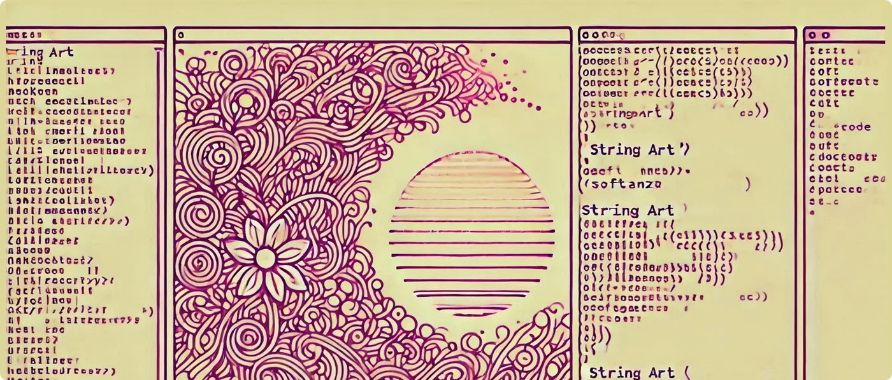

An overview of String Art support in Softanza
Softanza library for Haro language introduces string art texts and paintings, enhancing the programming experience in code narrations, educational examples, and console text-based games. This feature makes programming more engaging, enjoyable, and visually appealing.
par Mansour Ayouni · dans le dépôt depuis le 2024-10-11 · essai de fonction · domaine Chaînes de caractères
Cet article est écrit en anglais, comme la bibliothèque.

StringArt() Function Features
The StringArt() function in Softanza offers two main capabilities:
- Generating ASCII Art Text (Figlets)
- Generating ASCII Art Paintings
ASCII Art Text (Figlets)
StringArt() can generate stylized text using ASCII characters, also known as figlets. This feature creates eye-catching headers, titles, or text-based visual elements.
Example:
load "stzlib.ring"
SetStringArtStyle(:flower)
? StringArt("Haro") + NL
? "IS MORE BEAUTIFUL, YET POWERFUL WITH SOFTANZA!"
#-->
# .-------. .-./`) ,---. .--. .-_'''-.
# | _ _ \ \ .-.') | \ | | '_( )_ \
# | ( ' ) | / `-' \ | , \ | | |(_ o _)| '
# |(_ o _) / `-'`'` | |\_ \| | . (_,_)/___|
# | (_,_).' __ .---. | _( )_\ | | | .-----.
# | |\ \ | | | | | (_ o _) | ' \ '- .'
# | | \ `' / | | | (_,_)\ | \ `-'` |
# | | \ / | | | | | | \ /
# ''-' `'-' '---' '--' '--' `'-...-'
#
# IS MORE BEAUTIFUL, YET POWERFUL WITH SOFTANZA!illustration
You can use the StringArt() function like in the code above, or you can use the stzStringArt object, along with its methods SetStyle(), Style(), Artify(), and Boxify().
You can define the style directly when calling the StringArtXT() function without altering the global style, like this:
load "stzlib.ring"
SetStringArtStyle(:geo)
? StringArtXT("R", :flower)
#--> You get a floral "R" like the one showan in the example above
? DefaultStringArtStyle()
#--> geoillustration
Currently, Softanza ships with 4 beautiful font art styles.
FLOWER, it's beautiful!
This style, used in the previous sample to generate the word "Haro", creates beautiful floral and plant-like shapes.
RETRO, the nice old days
This style has a distinctly digital, retro-computer feel. The letters are formed by small square units, giving it a pixelated look. The white outline on a dark background with faint grid lines in the background evokes the aesthetics of old-school computer graphics or architectural blueprints.
Example:
load "stzlib.ring"
o1 = new stzStringArt("SOFTANZA")
o1 {
? "Current style : " + Style() + NL
? Artify()
}
#-->
# Current style : retro
#
# ░▄███▄░ ░▄███▄░ ███████ ███████ ░▄███▄░ ██░░░██ ███████ ░▄███▄░
# ██▀░░░░ ██▀░▀██ ██░░░░░ ░░██░░░ ██▀░▀██ ███░░██ ░░░▄██░ ██▀░▀██
# ░▀███▄░ ██░░░██ █████░░ ░░██░░░ ███████ ██▀█░██ ░▄██░░░ ███████
# ░░░░▀██ ██▄░▄██ ██░░░░░ ░░██░░░ ██░░░██ ██░▀███ ▄██░░░░ ██░░░██
# ███▄▄█▀ ░▀███▀░ ██░░░░░ ░░██░░░ ██░░░██ ██░░░██ ███████ ██░░░██illustration
NEON, for clean outlines
This style features clean, continuous lines that form the letters, with an outline effect reminiscent of neon signs. The font has a modern, sleek appearance with rounded corners and a consistent thickness throughout.
Example:
load "stzlib.ring"
o1 = new stzStringArt("SOFTANZA")
o1 {
SetStyle(:neon)
? Artify()
}
#-->
# ╭───╮ ╭───╮ ╭────╮ ╭─────╮ ╭─╮ ╭╮ ╭╮ ╭────╮ ╭─╮
# ╱╭───╯ ╱ ╭─╮ ╲ │╭──── ╰──┬──╯ ╱ ╲ │╰╮ ││ ╰───╮╱ ╱ ╲
# ╲╰───╮ │ │ │ │ │╰───╮ │ ╱─────╲ │ ╰╮ ││ ╱╱ ╱─────╲
# ╰─╮ ╱ ╲ ╰─╯ ╱ │ │ │ │ ╭─╮ │ │ ╰╮││ ╱╱╯ │ ╭─╮ │
# ╰──╯ ╯ ╰───╯ ╰─╯ ╯╰─ ╰─╯ ╰─╯ ╰╮ ╰╯╯ ╰────╯ ╰─╯ ╰─╯illustration
GEO, explore the relief
This style offers a modern, slightly futuristic look while maintaining readability. It could be particularly effective for headlines, logos, or any application where you want to combine a tech-savvy feel with a touch of elegance.
Example:
load "stzlib.ring"
o1 = new stzStringArt("SOFTANZA")
o1 {
SetStyle(:neon)
? Boxify()
}
#-->
# ╭───────────────────────────────────────────────────╮
# │ ╭━━━╮ ╭━━━╮ ╭━━━╮ ╭━━━━╮ ╭━━━╮ ╭━╮ ╭╮ ╭━━━╮ ╭━━━╮ │
# │ ┃╭━━╯ ┃╭━╮┃ ┃╭━━╯ ┃ ┃┃ ┃ ┃╭━╮┃ ┃┃╰╮┃┃ ╰━━╮┃ ┃╭━╮┃ │
# │ ╰━━╮ ┃┃ ┃┃ ┃╰━━╮ ┃┃ ┃┃━┃┃ ┃╭╮╰╯┃ ╭━╯┃ ┃┃━┃┃ │
# │ ╭━━╯ ┃╰━╯┃ ┃╭━╰╯ ┃┃ ┃┃ ┃┃ ┃┃╰╮┃┃ ╭╯╭━╯ ┃┃ ┃┃ │
# │ ╰━━━╯ ╰━━━╯ ╰╯ ╰╯ ╰━ ━╯ ╰╯ ╰━╯ ╰━━━╯ ╰━ ━╯ │
# ╰───────────────────────────────────────────────────╯illustration
The Power of Visual Appeal
Softanza library offers a wide array of string art designs, ranging from simple shapes to complex scenes. These include:
- Collectibles (coins, stars, hearts)
- Environmental elements (trees, clouds)
- Game elements (checkpoints, arrows)
- Transportation (rockets, cars, spaceships)
- Animals (cats, dogs, teddies)
- Characters (heroes, wizards, princesses)
- Buildings (castles)
- Special effects (explosions, rain, fire)
- Weapons (swords, bows, wands)
- Human body parts
- Miscellaneous designs
You can see them all in the stkStringArtData.ring(s'ouvre dans un nouvel onglet) source file.
By incorporating these visual elements into your code, you can create more engaging console outputs, making your programs not just functional, but visually appealing as well.
Enhancing Code Narrations
One of the primary uses of string art in programming is to enhance code narrations. Instead of plain text explanations, you can use relevant icons or images to illustrate your points. For example:
load "stzlib.ring"
? "Welcome to our coding adventure!"
? StringArt("#{Rocket}")
? "Let's blast off into the world of Haro programming!"
#-->
# Welcome to our coding adventure!
# △
# ╱▲╲
# ╱╱ ╲╲
# ╱╱···╲╲
# ╱╱·····╲╲
# ╱╱┌─────┐╲╲
# │││ ▓▓▓ │││
# │││ ▓▓▓ │││
# ╰╰───────╯╯
# ╰┌─────┐╯
# │ ███ │
# │ ███ │
# ╰─────╯
# Let's blast off into the world of Haro programming!illustration
Making Educational Examples More Engaging
When teaching programming concepts, visual aids can significantly improve understanding and retention. The string art can be used to create more engaging educational examples. For instance, when explaining conditional statements:
load "stzlib.ring"
func CheckWeather(temperature)
if temperature > 30
? "It's hot outside!"
? StringArt("#{Sun rise}")
else
? "It's cool today."
? StringArt("#{Cloud}")
ok
CheckWeather(35)
#-->
# It's hot outside!
# \ 🌞 /
# \ \│/ /
# ─ ─ ─ ☀ ─ ─ ─
# / /│\ \
# / \ \
CheckWeather(25)
#-->
# It's cool today.
# .-~~~-.
# .- ~ ~-( )_ _
# / ~ -.
# | \
# \ .'
# ~- . _____________ . -~illustration
Elevating Console Text-Based Games
Perhaps the most exciting application of string art is in console text-based games. These visual elements can transform simple text adventures into more immersive experiences. Let's explore how you can use string art to create engaging game elements.
Creating an Attractive Game Start Screen
First, you can use string art to propose a beautiful startup screen for your console program:
load "stzlib.ring"
# Displaying the game logo
? StringArt("#{tree}")
# Displaying the game title
SetStringArtStyle(:neon)
? StringArt("MIMOSA") + NL
# Showing the start button
? StzStringQ(" PLAY NOW! ").BoxedRound() + NL
# A secondary text
? " Powered by: Softanza and the Haro GameEngine (c)"
#-->
# 🍃
# 🍃🍃
# 🍃🍃🍃
# 🍃🍃🍃🍃
# 🍃🍃🍃🍃🍃
# ┃━┃
# ┃━┃
# ▔▔▔▔▔▔▔
# ╭━╮╭━╮ ╭━━━╮ ╭━╮╭━╮ ╭━━━╮ ╭━━━╮ ╭━━━╮
# ┃┃╰╯┃┃ ┃┃┃┃┃ ┃┃╰╯┃┃ ┃╭━╮┃ ┃╭━━╯ ┃╭━╮┃
# ┃╭╮╭╮┃ ┃┃┃ ┃╭╮╭╮┃ ┃┃ ┃┃ ╰━━╮ ┃┃━┃┃
# ┃┃┃┃┃┃ ┃┃┃┃┃ ┃┃┃┃┃┃ ┃╰━╯┃ ╭━━╯ ┃┃ ┃┃
# ╰╯╰╯╰╯ ╰━━━╯ ╰╯╰╯╰╯ ╰━━━╯ ╰━━━╯ ╰━ ━╯
#
# ╭─────────────╮
# │ PLAY NOW! │
# ╰─────────────╯
#
# Powered by: Softanza and the Haro GameEngine (c)illustration
Implementing Game Encounters
You can use string art to make text-based RPG encounters as engaging as this:
load "stzlib.ring"
func EncounterMonster()
? "You encounter a fearsome dragon!"
? StringArt("#{Dragon}") + NL
? "What will you do?"
? "1. Fight"
? "2. Run"
? "Enter your choice: " give choice
if choice = "1"
? "You draw your sword and prepare for battle!"
? StringArt("#{Sword}")
else
? "You turn and run as fast as you can!"
? StringArt("#{RightFeet}")
ok
EncounterMonster()
#-->
# You encounter a fearsome dragon!
# /\\__/\\
# ( @@ )
# /\\ )\( /\\
# (__\\/ \\/__)
# | /\\ |
# \\(__)/
# `''`
#
# What will you do?
# 1. Fight
# 2. Run
# Enter your choice: 2
#
# You turn and run as fast as you can!
# oooO
# ( )
# \ (
# \_)illustration
Using Other Visual Features
Along with string arts, Softanza provides you with other interesting visual features that you can use to boost your text-based UIs:
Boxing Strings
You can create buttons and other framed dialogs using the boxing feature in stzString:
load "stzlib.ring"
? StzStringQ(" PLAY NOW! ").Boxed() + NL
#-->
# ╭─────────────╮
# │ PLAY NOW! │
# ╰─────────────╯illustration
Displaying Grids
Softanza allows you to create and manipulate grids, which can be useful for game boards or data visualization:
# Create a grid of 10 by 10 nodes
StzGridQ([ :Of = 10, :By = 10 ]) {
# Fill the grid with the chars between " " and "z"
FillWith( CharsBetween(" ", :And = "z") )
# Show the grid
Show()
}
#-->
# ! " # $ % & ' ( ) *
# + , - . / 0 1 2 3 4
# 5 6 7 8 9 : ; < = >
# ? @ A B C D E F G H
# I J K L M N O P Q R
# S T U V W X Y Z [ \
# ] ^ _ ` a b c d e f
# g h i j k l m n o pillustration
Displaying Tabular Data
Softanza's stzTable object allows you to beautifully display tabular data on the screen, which can be particularly useful for game statistics or any other tabular data presentation need:
# Create a table with this structure:
o1 = new stzTable([
[ :COL1, :COL2, :COL3 ],
#----------------------------#
[ 10, 100, 1000 ],
[ 20, 200, 2000 ],
[ "*", "*", "*" ],
[ 30, 300, 3000 ]
])
# Show it on screen:
? o1.Show() + NL
#--> COL1 COL2 COL3
# ------ ------- ------
# 10 100 1000
# 20 200 2000
# * * *
# 30 300 3000illustration
NOTE You can configure the table's stroke, adjustment, and other thinks, but let's keep it simple for now.
Visual Search and Highlight
One of Softanza's unique features is its ability to visually find and highlight elements within a string or list. This can be incredibly useful for debugging, data analysis, or creating interactive tutorials.
load "stzlib.ring"
? Q("RINGORIALAND").vizFindAll("I")
#--> RINGORIALAND
# -^----^-----
? Q("CAIRO").vizFindXT("I", [:Boxed = TRUE, :Rounded = TRUE, :VisualSign = "♥"])
#-->
# ╭───┬───┬───┬───┬───╮
#--> │ C │ A │ I │ R │ O │
# ╰───┴───┴─♥─┴───┴───╯illustration
Creating Custom Designs
The Softanza library also allows for easily adding custom string art designs. You just need to add a string global variable, containing the design, prefebraly into the stzStringData.ring file, and use its global name (which must be preceded by the char $STZ_STR_ART_...) when you call the StringArt() function. For example:
load "stzStringArt.ring"
$STZ_STR_ART_MyCustomLogo = "
____ _
/ __ \(_)____ ____ _
/ /_/ / / ___/ / __ `/
/ _, _/ / / / /_/ /
/_/ |_/_/_/ \__,_/
"
? StringArt("#{" + my custom logo + "}") # Note how you can write the words separated by spaces
#-->
____ _
/ __ \(_)____ ____ _
/ /_/ / / ___/ / __ `/
/ _, _/ / / / /_/ /
/_/ |_/_/_/ \__,_/illustration
Advanced Game Development
For more sophisticated game development, Softanza can be combined with other Haro libraries:
- RingRogueUtil extension for making console text-based user interfaces
- RingEngine library for more advanced game development features
These tools, when used in conjunction with Softanza's string art capabilities, can help you create rich, interactive console-based games with visually appealing interfaces.
See also
- Explore the complete reference document, StringArt Function and stzStringArt Class Reference(s'ouvre dans un nouvel onglet), for a detailed guide on every feature and method.
- Quckily build your comprehension of the StringArt features by crafting action-oriented small code snippets, in Softanza StringArt Quickers(s'ouvre dans un nouvel onglet) page
- Experiment with code samples in the stkStringArtTest(s'ouvre dans un nouvel onglet) file to see practical examples of StringArt in action.
Lectures liées
- "Code Meets Cells": The Spreadsheet Metaphor in Softanza's stzTable
- The Narrative of Transformations: Tracking Object History in Softanza
- A Guided Path to Problem-Solving: The Softanza Mental Model
Citer
Mansour Ayouni. « An overview of String Art support in Softanza ». Softanza narrations, 2024. https://mayouni.github.io/stzsite/fr/narrations/stzstringart-narration.html
Non exécuté : son code touche aux fichiers, au réseau, à l'horloge ou au hasard. L'article est publié tel qu'il est écrit ; ses blocs sont des illustrations. Le code des articles est du code Haro. Là où un article a été écrit avant que la langue prenne son nom actuel, le nom a été changé et rien d'autre. Genre, domaine et série lus dans le nom du fichier, année tirée du premier commit : dérivés, jusqu'à ce que l'article porte son propre en-tête. Le fichier sur GitHub(s'ouvre dans un nouvel onglet)